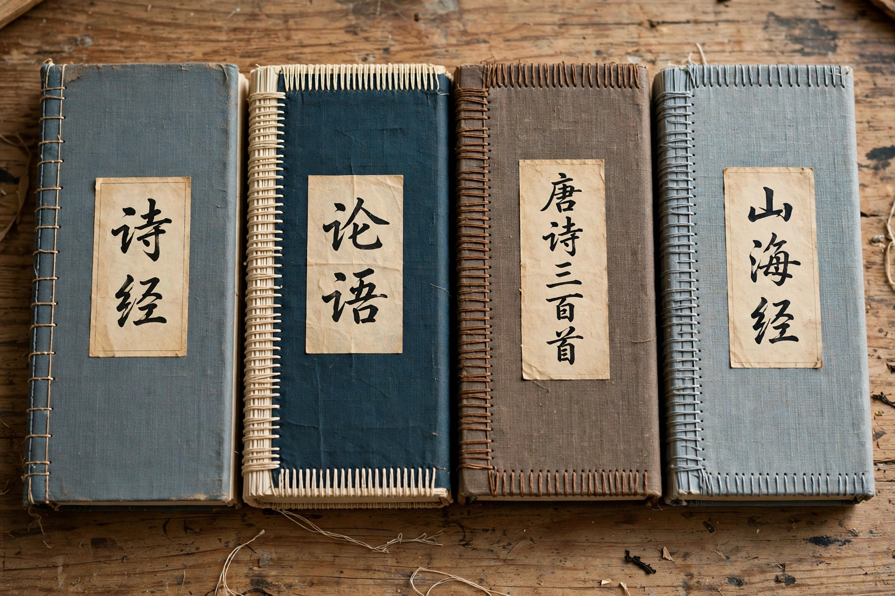

The Four Great Classical Novels (Chinese: 四大名著; pinyin: sì dà míngzhù) are the four novels most revered in Chinese literary tradition, written during the Ming and Qing dynasties. They are Romance of the Three Kingdoms, Water Margin, Journey to the West, and Dream of the Red Chamber. Together they defined the possibilities of the Chinese long-form vernacular novel — its chapter structure (zhanghui fiction), mixed prose and verse, storyteller's voice, and encyclopedic range — and remain the most widely read, adapted, and studied works of pre-modern Chinese fiction.
| Novel | Attributed author | Dynasty | Subject |
|---|---|---|---|
| Romance of the Three Kingdoms (三國演義) | Luo Guanzhong | Ming (14th c.) | The fall of Han and the wars of Wei, Shu, and Wu, 184–280 AD |
| Water Margin (水滸傳) | Shi Nai'an (attrib.) | Ming (14th c.) | The 108 outlaws of Liangshan Marsh under Song Jiang |
| Journey to the West (西遊記) | Wu Cheng'en (attrib.) | Ming (16th c., publ. 1592) | Tang Sanzang's pilgrimage to India with Monkey, Pigsy, and Friar Sand |
| Dream of the Red Chamber (紅樓夢) | Cao Xueqin | Qing (18th c.) | The rise and fall of the Jia clan and the love of Jia Baoyu and Lin Daiyu |
The modern grouping of four descends from the Ming-dynasty notion of the "four masterworks" (si da qishu, 四大奇書), a list promoted by the bookseller tradition associated with Feng Menglong, which comprised Romance of the Three Kingdoms, Water Margin, Journey to the West, and the erotic novel Jin Ping Mei. In the 20th century Dream of the Red Chamber displaced Jin Ping Mei in the canonical four — reflecting both the Red Chamber's towering critical reputation and the unsuitability of the Jin Ping Mei's explicit content for school curricula — and the label "Four Great Classical Novels" became standard in the People's Republic of China, propagated through textbooks, television adaptations, and popular culture.
The four novels generated vast commentarial traditions — the editions of Mao Zonggang (Three Kingdoms) and Jin Shengtan (Water Margin) are themselves classics of Chinese criticism — and entire fields of study, most famously "Redology" (hongxue), the study of Dream of the Red Chamber. Their characters — Zhuge Liang, the 108 Liangshan heroes, Sun Wukong, Jia Baoyu — are pan–East Asian cultural icons, perpetually recycled in opera, comics, film, television serials, and games.